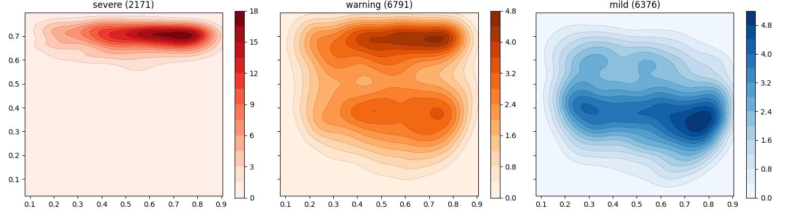

Note
Click here to download the full example code
Categories (Damien)¶
This script is useful to understand the distribution over the 2D projected space of the different categories. The categories (severe, warning, mild, …) can be created by combining other existing features/outcomes in the data. This script contains the categories defined by Damien.
Out:
Data:
dsource age weight plt haematocrit_percent body_temperature gender date shock severe warning mild
study_no
01nva-003-2008 01nva 16.0 72.0 8.0 54.0000 37.0750 1.0 2020-07-17 True True True False
01nva-003-2009 01nva 17.0 44.0 8.0 47.3333 37.0000 0.0 2020-07-30 True True True False
01nva-003-2012 01nva 17.0 48.0 9.0 49.1500 37.1875 0.0 2020-08-15 True True True False
01nva-003-2024 01nva 16.0 114.0 9.0 49.1000 37.1167 1.0 2020-10-09 True True True False
01nva-003-2028 01nva 18.0 82.0 18.0 42.9714 37.1500 0.0 2020-11-07 True True True False
... ... ... ... ... ... ... ... ... ... ... ... ...
md-994 md 13.0 53.0 88.0 42.0000 40.0000 0.0 2003-08-27 False False False True
md-995 md 9.0 27.5 132.0 37.8000 39.0000 0.0 2003-08-27 False False False True
md-996 md 10.0 33.0 75.0 43.0000 39.9000 0.0 2003-07-24 False False True False
md-998 md 13.0 44.0 94.0 41.5000 38.5000 1.0 2003-08-29 False False True False
md-999 md 15.0 49.0 56.0 40.5000 38.5000 0.0 2003-08-29 False False True False
[12863 rows x 12 columns]
dsource object
age float64
weight float64
plt float64
haematocrit_percent float64
body_temperature float64
gender float64
date datetime64...
shock object
severe bool
warning bool
mild bool
dtype: object
12863
severe 2171
mild 6376
warning 6791
dtype: int64
Model:
Autoencoder(
(encoder): Sequential(
(0): Linear(in_features=5, out_features=3, bias=True)
(1): Sigmoid()
(2): Linear(in_features=3, out_features=2, bias=True)
(3): Sigmoid()
)
(decoder): Sequential(
(0): Linear(in_features=2, out_features=3, bias=True)
(1): Sigmoid()
(2): Linear(in_features=3, out_features=5, bias=True)
(3): Sigmoid()
)
)
Encoded:
[[0.1520529 0.74539393]
[0.2646528 0.7333292 ]
[0.23637003 0.7385248 ]
...
[0.453338 0.620019 ]
[0.28497958 0.5708288 ]
[0.23240355 0.62076086]]
Data:
dsource age weight plt haematocrit_percent body_temperature gender date shock severe warning mild x y
study_no
01nva-003-2008 01nva 16.0 72.0 8.0 54.0000 37.0750 1.0 2020-07-17 True True True False 0.1521 0.7454
01nva-003-2009 01nva 17.0 44.0 8.0 47.3333 37.0000 0.0 2020-07-30 True True True False 0.2647 0.7333
01nva-003-2012 01nva 17.0 48.0 9.0 49.1500 37.1875 0.0 2020-08-15 True True True False 0.2364 0.7385
01nva-003-2024 01nva 16.0 114.0 9.0 49.1000 37.1167 1.0 2020-10-09 True True True False 0.0784 0.7186
01nva-003-2028 01nva 18.0 82.0 18.0 42.9714 37.1500 0.0 2020-11-07 True True True False 0.1081 0.6866
... ... ... ... ... ... ... ... ... ... ... ... ... ... ...
md-994 md 13.0 53.0 88.0 42.0000 40.0000 0.0 2003-08-27 False False False True 0.2172 0.5767
md-995 md 9.0 27.5 132.0 37.8000 39.0000 0.0 2003-08-27 False False False True 0.4946 0.5147
md-996 md 10.0 33.0 75.0 43.0000 39.9000 0.0 2003-07-24 False False True False 0.4533 0.6200
md-998 md 13.0 44.0 94.0 41.5000 38.5000 1.0 2003-08-29 False False True False 0.2850 0.5708
md-999 md 15.0 49.0 56.0 40.5000 38.5000 0.0 2003-08-29 False False True False 0.2324 0.6208
[12863 rows x 14 columns]
14 15 16 17 18 19 20 21 22 23 24 25 26 27 28 29 30 31 32 33 34 35 36 37 38 39 40 41 42 43 44 45 46 47 48 49 50 51 52 53 54 55 56 57 58 59 60 61 62 63 64 65 66 67 68 69 70 71 72 73 74 75 76 77 78 79 80 81 82 83 84 85 86 87 88 89 90 91 92 93 94 95 96 97 98 99 100 101 102 103 104 105 106 107 108 109 110 111 112 113 114 115 116 117 118 119 120 121 122 123 124 125 126 127 128 129 130 131 132 133 134 135 136 137 138 139 140 141 142 143 144 145 146 147 148 149 150 151 152 153 154 155 156 157 158 159 160 161 162 163 164 165 166 167 168 169 170 171 172 173 174 175 176 177 178 179 180 181 182 183 184 185 186 187 188 189 190 191 192 193 194 195 196 197 198 199 200 201 202 203 204 205 206 207 208 209 210 211 212 213 214 215 216 217 218 | # Library
import pickle
import pandas as pd
import numpy as np
import matplotlib as mpl
# Specific
from torch.utils.data import DataLoader
from sklearn.preprocessing import MinMaxScaler
# Specific
from pkgname.core.AE.autoencoder import get_device, set_seed
from pkgname.utils.data_loader import load_dengue, IQR_rule
# Local (also configures mpl and pd)
import _utils
# ------------------------------
# Constants
# ------------------------------
# Load constants
features = _utils.features
others = _utils.others
mappings = _utils.mappings
aggregation = _utils.aggregation
cmaps = _utils.cmaps
outcomes = [
"severe",
"warning",
"mild",
]
# Ensure all outcomes are in aggregation
for c in outcomes:
if c not in aggregation:
print("Adding... %23s | max" % c)
aggregation[c] = 'max'
# Rows and cols
nrows, ncols = 1, 3
# ------------------------------
# Load data
# ------------------------------
# Load data
data = _utils.load_data()
# Liver abnormal
data['liver_abnormal'] = \
data.liver_acute | \
data.liver_involved | \
data.liver_failure | \
data.liver_severe | \
data.jaundice
# Kidney abnormal
data['kidney_abnormal'] = \
data.skidney
# Create features
data['severe_leak'] = \
data.ascites | \
data.overload | \
data.oedema_pulmonary | \
data.respiratory_distress
# Bleeding
data['severe_bleed'] = \
data.bleeding_gi | \
data.bleeding_urine # useless
# Organ impairment
data['severe_organ'] = \
data.cns_abnormal
# Category: severe
data['severe'] = \
data.severe_leak | \
data.severe_bleed | \
data.severe_organ | \
data.shock
# Category: warning WHO
data['warning'] = \
data.abdominal_pain | \
data.abdominal_tenderness | \
data.vomiting | \
data.ascites | \
data.pleural_effusion | \
data.bleeding_mucosal | \
data.restlessness | \
data.lethargy | \
(data.liver_palpation_size.fillna(0) > 2)
# Category: mild
data['mild'] = ~(data.severe | data.warning)
# .. note: We are assuming that these are all
# boolean features, usually containing
# 1 when an unusual event happens. Thus
# filling with 0 (e.g. shock).
# Fill empty values
for c in outcomes:
data[c] = data[c].fillna(0)
# Filter data (age, iqr, ...)
data = data[data.age.between(0.0, 18.0)]
data = data[data.plt < 50000] # extreme outlier
# Filter outliers
data = IQR_rule(data, [
'plt',
#'haematocrit_percent',
#'body_temperature'
])
# Rename
# .. note: Done after convert_dtypes so that
# it remains 0 or 1, otherwise it will
# be transformed to boolean feature.
# (its ok too).
data = data.replace(mappings)
# Get worst state for patient
data = data.groupby(by="study_no", dropna=False) \
.agg(aggregation).dropna()
# Show data
print("\nData:")
print(data)
print(data.dtypes)
print(data.index.nunique())
print(data[outcomes].sum().sort_values())
# ------------------------------
# Load Model
# ------------------------------
# Load model
model = _utils.load_model()
# Show
print("\nModel:")
print(model)
# ------------------------------
# Projections
# ------------------------------
# .. note: The scaling method should have also been
# saved when training the model.
# Features
datap = data[features].copy(deep=True)
# Scale first
datap = MinMaxScaler().fit_transform(datap)
# Encode
encoded = model.encode_inputs( \
DataLoader(datap, 16, shuffle=False))
# Include in original dataset
data[['x', 'y']] = encoded
# Show
print("\nEncoded:")
print(encoded)
print("\nData:")
print(data)
# ------------------------------
# Visualization
# ------------------------------
# Libraries
import matplotlib.pyplot as plt
# Specific
from _utils import kde_mpl_plot
from _utils import kde_mpl_compute
from _utils import kde_mpl
# Figure with kdes
f5, axes5 = plt.subplots(nrows, ncols,
figsize=(15, 4), sharex=True, sharey=True)
# Loop
for i, c in enumerate(outcomes):
# Select dataset
aux = data[data[c] == 1]
# Plot kde
kde_mpl(aux.x, aux.y, ax=axes5.flat[i],
contour=True, cmap=cmaps.get(c, 'Reds'),
xlim=(data.x.min(), data.x.max()),
ylim=(data.y.min(), data.y.max()))
# Configure
axes5.flat[i].set(aspect='equal',
title='%s (%s)' % (c, aux.shape[0]))
# Configure
plt.tight_layout()
# Show
plt.show()
|
Total running time of the script: ( 0 minutes 7.777 seconds)